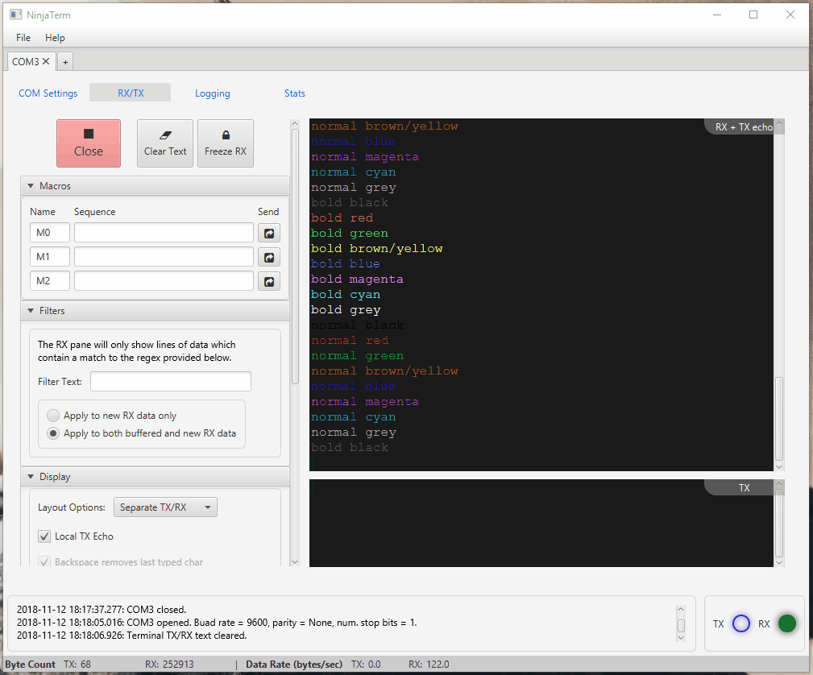

Problems installing? See the Installation section.
Features
ANSI Escape Sequence Support
NinjaTerm supports ANSI escape sequences for changing the terminal text colour. Use this to colour debug text from each module in your microcontroller's firmware a different colour, and/or colour all warning/error messages red!
Smart Filtering
Hard to focus on just one issue when there is a deluge of debug messages coming from the microcontroller? Use intelligent filtering which hides lines that don't match your search. Use it to focus on debug messages from particular firmware modules, or to just show error messages!

Multiple Port Support
Each instance of NinjaTerm is not limited to just one COM port. Open up multiple tabs, and have multiple terminals/COM ports open at the same time!
Macros
The powerful macro functionality allows you to input pre-defined sequences of data that can be sent at the press of a button (perfect to sending AT commands). The data can be in either ASCII (escape sequences for non-printable chars supported!) or hex.
Flexible Layout Options
Not all uses terminal software work well with the same layout. Sometimes you want a "bash shell" style terminal window, sometimes you want separate panes for TX and RX data. NinjaTerm supports both, interchangeable at the tick of a checkbox!
Plus more handy stuff!
- Smart Scrolling - The RX data pane can scroll as new data comes in, so the data you are viewing does not shift as new data comes in.
- Logging - NinjaTerm supports either the logging of the RAW data (as ASCII characters), or the logging of the processed text that is displayed on screen.
- Continuous 19200bit/s Decoding - NinjaTerm can handle the decoding of continuous 19200bit/s data with serious performance issues (sporadic data at much higher data rates is supported).
- RX Freeze - The incoming RX data can be "frozen" (paused) without disconnecting from the COM port.
- Adjustable Wrapping Width - The number of characters per line on the TX/RX displays can be adjusted.
- "Always On Top" Feature - The NinjaTerm window stays on top of other windows, even if it loses focus.
- Custom Baud Rates - NinjaTerm supports non-standard (custom) baud rates (as long as the underlying OS/hardware also supports it).
Installation
TIME SAVER – If you already have NinjaTerm installed, just run it and the auto-updater should ask you if you wish to download and update your version of NinjaTerm.
Java run-time environment (JRE) v1.8 (a.k.a. Java 8) or higher is required on any platform. Download the Java JRE here.
Windows
- Click the 'Win' download link above to download a .exe installer.
- Run the .exe, NinjaTerm should install.
- All done!
UNIX (e.g. Ubuntu)
Note that the commands are tailored to Debian systems (i.e. apt-get). They will have to be modified for Redhat systems (i.e. using yum/rpm).
-
Click the 'nix' download link above to download a '.sh' installer.
-
Give the current user executable permissions for the file:
chmod +x NinjaTerm_vX.X.X_unix.sh -
Run the installer with the command:
sh NinjaTerm_vX.X.X_unix.sh.This should also install
openjfxif not already on your system. -
The installer will stop if you haven't got
Java v1.8or greater installed. You can install this with:sudo apt-get install openjdk-8-jre -
All done! Note that if NinjaTerm is not finding your COM port, it may be because the user who ran NinjaTerm does not have privileges to access it. To give yourself access privileges, run:
sudo chmod 666 /dev/ttyACM0
Bugs, Feature Requests, Questions, e.t.c
Please create an issue in the GitHub repository if you want to log a bug, make a feature request, ask a question, e.t.c.
Contributors
Thanks to Zac Frank for user-interaction guidance and tips!
Thanks to the additional testing done by William Hunter.
Thanks to John Hofman for helping port the project to Maven and setup TravisCI.
GIFs for this home page created with the amazing open-source "Screen To Gif" program.
The team at ej-technologies have graciously donated me an
open-source licensed version of  , the multi-platform
installer builder for Java applications. They have also provided
, the multi-platform
installer builder for Java applications. They have also provided  , a top-notch Java profiler.
, a top-notch Java profiler.
Big ups to "utopian" to creating the NinjaTerm logo!